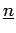
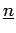

With the help of the Diamond Lemma for Ring Theory [Bg] we will
construct a free basis for
. Our order  on
 induces a
lexcographical order on multi-indices
on
 induces a
lexcographical order on multi-indices
 and on the
correspondinmg monomials
, which will be denoted by the
same symbol
and on the
correspondinmg monomials
, which will be denoted by the
same symbol  . On the monomials of
. On the monomials of
 we get an induces
partial order if we declare monomials of different degree to be uncomparable.
It is clear that
we get an induces
partial order if we declare monomials of different degree to be uncomparable.
It is clear that  is compatible with the semigroup structure of the
set of monomials of
is compatible with the semigroup structure of the
set of monomials of
 as required in [Bg].
as required in [Bg].
We now introduce a system of reductions of degree two in
 extracted from the relations (13), (14) and (16)
of the exterior algebra and divide them accordingly
into three types. As in [Bg] we write them as pairs consisting of
a monomial and a substitution expression:
extracted from the relations (13), (14) and (16)
of the exterior algebra and divide them accordingly
into three types. As in [Bg] we write them as pairs consisting of
a monomial and a substitution expression:
Since all monomials of the reduction system are greater than the monomials in
the corresponding substitution expressions our partial order  on
on
 is compatible with the reduction system.
is compatible with the reduction system.
The set of monomials in
 which don't contain any monomial of the
reduction system as a subexpression clearly is
which don't contain any monomial of the
reduction system as a subexpression clearly is
Obviously  generates the
generates the  -th homogeneous summand
) of the
exterior algebra as an
-th homogeneous summand
) of the
exterior algebra as an  -module. To see that these sets are linear
independent we must show that all ambiguities of the reduction system are
solvable. Since all monomials are of degree two only overlapping ambiguities
occur and we can reduce to the case of degree three. Ambiguities between
reductions of type (R3) are trivially solvable and such ones where
both reductions are of type (R2) do not occur. Thus we have to handle the
following remaining cases:
-module. To see that these sets are linear
independent we must show that all ambiguities of the reduction system are
solvable. Since all monomials are of degree two only overlapping ambiguities
occur and we can reduce to the case of degree three. Ambiguities between
reductions of type (R3) are trivially solvable and such ones where
both reductions are of type (R2) do not occur. Thus we have to handle the
following remaining cases:
In order to prove solvability of these ambiguities we will write an
application of a reduction as: monomial  substitution expression.
The first case can be solved in the following way beginning with reduction of
the left hand side pair
substitution expression.
The first case can be solved in the following way beginning with reduction of
the left hand side pair
and then begining with the right hand side pair
The treatment of case 2 is very easy and must not be written down. In order to treat case 3 (a) we have to show that starting with a reduction of type (R2) on the left hand side pair finally reduces to zero.
Part (b) of case 3 is similar and we can proceed to case 4. Condition means that (the case has been treated above) or whereas means that . As above we reduce begining with the left hand side pair in (a)

and then beginning with the right hand side pair
Since or and we have and . Thus both reductions lead to the same expression. Turning to part (b) the calculation of both reductions lead to similar expressions but we have to divide the sum into a and a section. First we begin with the right hand side pair in (b)
and then begining with the left hand side pair
Since the expression is always zero. Thus both reduction coincide and the proof is finished.